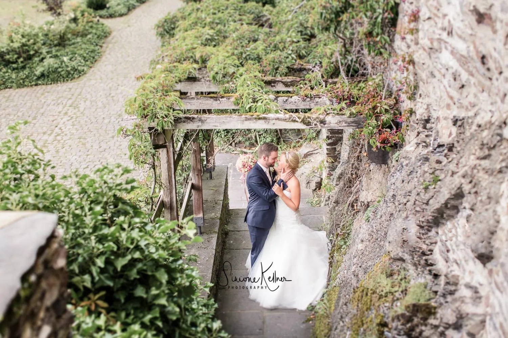

A CHAPTER OF QUICHE CT.
Shane’s Poetry
Words across generations
Shane’s poems, written when he was 13, can be presented alongside reflections from A.J. at the same age. This section is designed for the original writing—not invented substitutes—and can explore difficult feelings with care.

Shane · Age 13
Reserved for Shane’s original poems and accompanying background, with his permission.
A.J. · Age 13
Reserved for A.J.’s writing or reflections, shared with the family’s approval.
VISUAL STORYBOARD
Images & inspiration
Selected from the examples you supplied; more can be added as the story develops.
